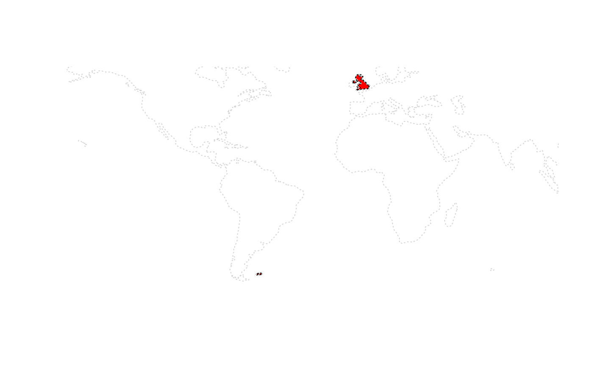
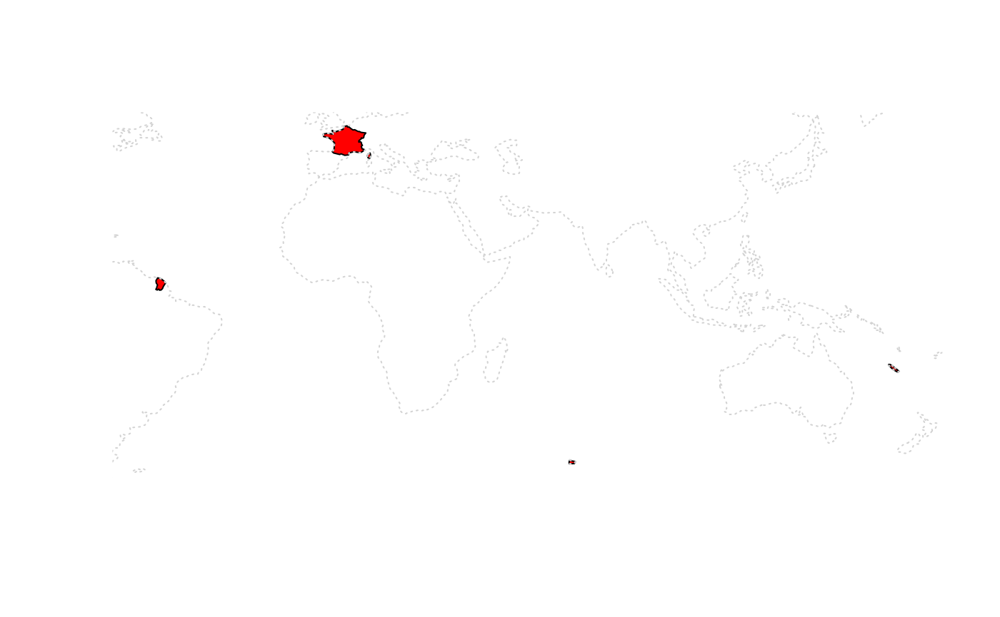

What is a country ?
Andy South
2021-07-14
Source:vignettes/what-is-a-country.Rmd
what-is-a-country.RmdThis vignette shows how rnaturalearth allows mapping countries using different definitions of what a country is. What a country is can be more complicated than you might expect.
For example, from my own parochial perspective, it allows mapping the UK as a whole or separating out England, Scotland, Wales and Northern Ireland. It also allows you to exclude far away places like the Falkland Islands, or not. Mapping France it allows the inclusion or exclusion of French Guiana and islands in the South Pacific.
rnaturalearth is an R package to hold and facilitate interaction with natural earth vector map data.
Natural Earth is a public domain map dataset including vector country boundaries.
This vignette uses sp::plot as a simple, quick way to plot the data obtained using rnaturalearth. rnaturalearth data can also be used to make more elaborate maps with ggplot2, tmap and other options.
Country types : countries, map_units and sovereignty.
Natural Earth data are classified by countries, map_units and sovereignty. Below you will see that specifying united kingdom for
-
countriesgives the UK undivided
-
map_unitsgives England, Scotland, Wales and Northern Ireland
-
sovereigntyincludes the Falkland Islands
Filtering by geounit can give finer control, e.g. to plot Scotland alone, or France without French Guiana.
# countries, UK undivided
sp::plot(ne_countries(country = 'united kingdom', type = 'countries'))## Warning in wkt(obj): CRS object has no comment
# map_units, UK divided into England, Scotland, Wales and Northern Ireland
sp::plot(ne_countries(country = 'united kingdom', type = 'map_units'))## Warning in wkt(obj): CRS object has no comment
# map_units, select by geounit to plot Scotland alone
sp::plot(ne_countries(geounit = 'scotland', type = 'map_units'))## Warning in wkt(obj): CRS object has no comment
# sovereignty, Falkland Islands included in UK
sp::plot(ne_countries(country = 'united kingdom', type = 'sovereignty'), col = 'red')## Warning in wkt(obj): CRS object has no comment
sp::plot(ne_coastline(scale = 110), col = 'lightgrey', lty = 3, add = TRUE)
# France, country includes French Guiana
sp::plot(ne_countries(country = 'france'))## Warning in wkt(obj): CRS object has no comment
# France map_units includes French Guiana too
sp::plot(ne_countries(country = 'france', type = 'map_units'))## Warning in wkt(obj): CRS object has no comment
# France filter map_units by geounit to exclude French Guiana
sp::plot(ne_countries(geounit = 'france', type = 'map_units'))## Warning in wkt(obj): CRS object has no comment
# France sovereignty includes South Pacicic islands
sp::plot(ne_countries(country = 'france', type = 'sovereignty'), col = 'red')## Warning in wkt(obj): CRS object has no comment
sp::plot(ne_coastline(scale = 110), col = 'lightgrey', lty = 3, add = TRUE)
Country scales : small, medium and large.
The different definitions of a country outlined above are available at different scales.
# countries, large scale
sp::plot(ne_countries(country = 'united kingdom', scale='large'))
# countries, medium scale
# temporarily commented out to avoid utf conversion travis error with Curacao
# sp::plot(ne_countries(country = 'united kingdom', scale = 'medium'))
# countries, small scale
sp::plot(ne_countries(country = 'united kingdom', scale = 'small'))